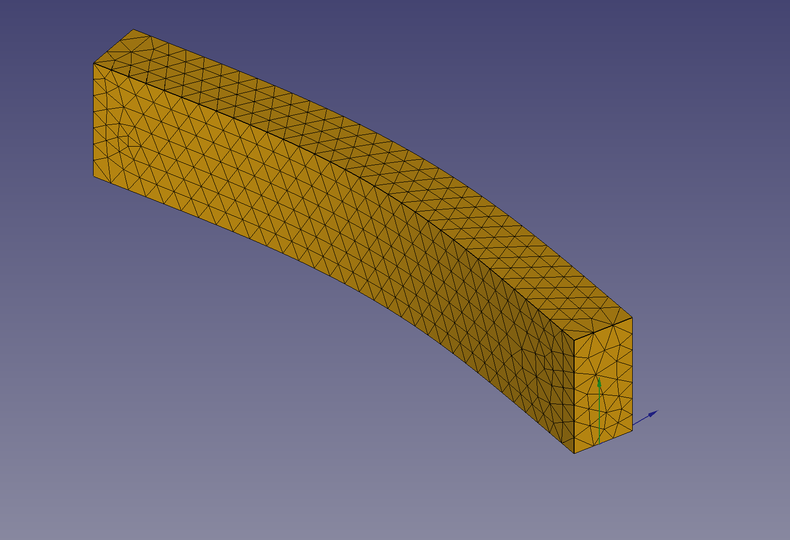
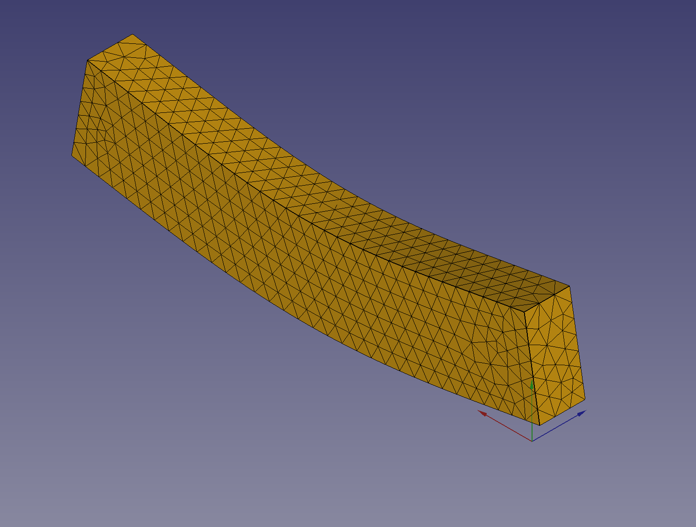
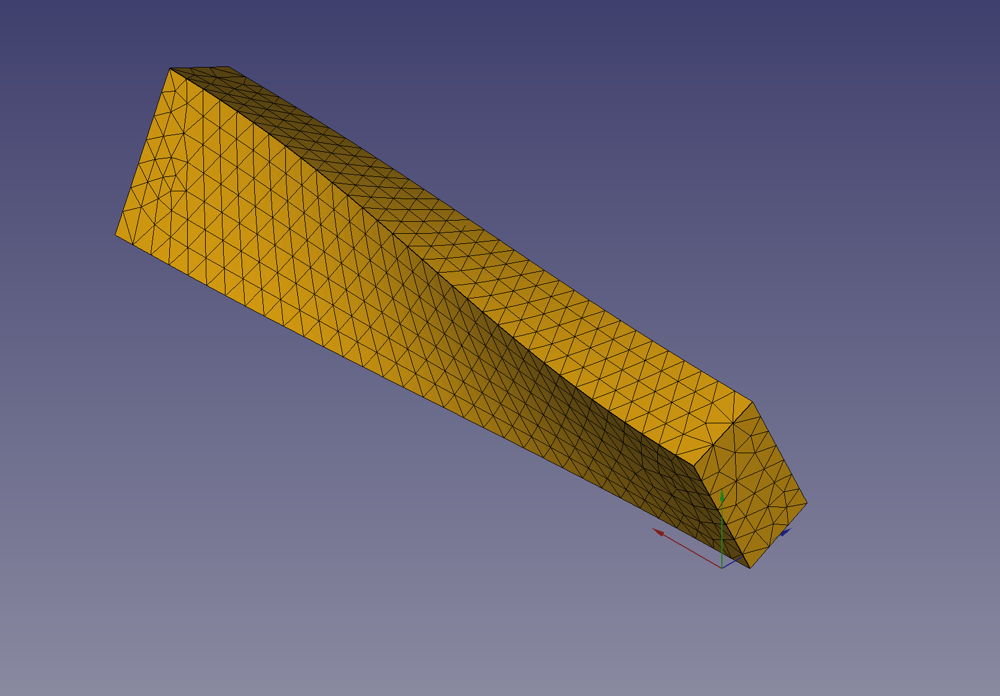

Example
In this example we are computing the first eigenfrequencies of a cantilever beam. First
we are going to use the analytic solution and then we are going to compare this result
with a computation by FreeCAD via the FEM-workbench.
Definitions
\begin{flalign}
l_{}=\mathtt{\text{1.00e+3}}\,\text{mm}& & \text{the length of the cantilever beam} \label{eqn:length}
\end{flalign}
\begin{flalign}
w=\mathtt{\text{2.00e+2}}\,\text{mm}& & \text{the width of the cantilever beam}\end{flalign}
\begin{flalign}
h_{}=\mathtt{\text{1.00e+2}}\,\text{mm}& & \text{the height of the cantilever beam}\end{flalign}
\begin{flalign}
\text{A}=h_{} \cdot w=\mathtt{\text{2.00e+2}}\,\text{cm}^{2}& & \text{the cross section area of the cantilever beam}\end{flalign}
\begin{flalign}
E_{}=\mathtt{\text{7.00e+7}}\,\frac{\text{kg}}{\text{mm} \cdot \text{s}^{2}}& & \text{the Young's modulus for aluminium}\end{flalign}
\begin{flalign}
\nu=\mathtt{\text{3.30e-01}}& & \text{Poisson ratio}\end{flalign}
\begin{flalign}
\text{G}=\frac{E_{}}{2 \cdot \nu + 2}=\mathtt{\text{2.63e+7}}\,\frac{\text{kg}}{\text{mm} \cdot \text{s}^{2}}& & \text{}\end{flalign}
\begin{flalign}
\rho=\mathtt{\text{2.70e-6}}\,\frac{\text{kg}}{\text{mm}^{3}}& & \text{the density of aluminium}\end{flalign}
Analytic Solution
\begin{flalign}
I_{yy}=\frac{h_{}^{3} \cdot w}{12}=\mathtt{\text{1.67e+3}}\,\text{cm}^{4}& & \text{the second moment of area of the cantilever beam}\end{flalign}
\begin{flalign}
I_{zz}=\frac{h_{} \cdot w^{3}}{12}=\mathtt{\text{6.67e+3}}\,\text{cm}^{4}& & \text{the second moment of area of the cantilever beam}\end{flalign}
\begin{flalign}
I_{p}=I_{yy} + I_{zz}=\mathtt{\text{8.33e+3}}\,\text{cm}^{4}& & \text{polar second moment of area}\end{flalign}
\begin{flalign}
k_{b1}=\mathtt{\text{4.73e+00}}& & \text{constant for the first bending eigenfrequency}\end{flalign}
\begin{flalign}
c_{t1}=\frac{0.0173333333333333 \cdot h_{}^{5}}{w^{5}} - \frac{0.21 \cdot h_{}}{w} + \frac{1}{3}=\mathtt{\text{2.29e-1}}& & \text{approximation formula}\end{flalign}
\begin{flalign}
I_{t}=c_{t1} \cdot h_{}^{3} \cdot w=\mathtt{\text{4.58e+3}}\,\text{cm}^{4}& & \text{approximation formula}\end{flalign}
\begin{flalign}
\nu_{b1}=\frac{k_{b1}^{2} \cdot \sqrt{\frac{E_{} \cdot I_{yy}}{\rho}}}{2 \cdot \pi \cdot l_{}^{2} \cdot \sqrt{\text{A}}}=\mathtt{\text{5.23e+2}}\,\text{Hz}& & \text{the first bending eigenfrequency} \label{nub1}
\end{flalign}
\begin{flalign}
\nu_{b2}=\frac{k_{b1}^{2} \cdot \sqrt{\frac{E_{} \cdot I_{zz}}{\rho}}}{2 \cdot \pi \cdot l_{}^{2} \cdot \sqrt{\text{A}}}=\mathtt{\text{1.05e+3}}\,\text{Hz}& & \text{the first bending eigenfrequency} \label{nub2}
\end{flalign}
\begin{flalign}
\nu_{t1}=\frac{\sqrt{\frac{I_{t}}{I_{p} \cdot \rho}} \cdot \sqrt{\text{G}}}{2 \cdot l_{}}=\mathtt{\text{1.16e+3}}\,\text{Hz}& & \text{the first torsion eigenfrequency} \label{nut1}
\end{flalign}


